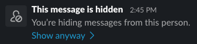

Slack is not safe finally somewhat safe
Does Slack have a block button yet?
Not quite, but it has something really close!
"Hiding" and Reporting
Welcome news what I came across in June 2024: They have now added an option to "hide" a user. This is very similar to how Discord's block feature works, in that it does not entirely block the other user, but it does prevent them from DMing you, and it will hide their identity and messages (but still show a placeholder) in channels that you're both in.
There is also a "Report to Slack" button. I have not tried using it yet, but it appears to imply that Slack are now taking some responsibility for their users' safety. This is good news, but it shouldn't have taken this long for it to happen.
How do I block someone on Slack?
You can almost completely block someone using the "Hide" feature. Open the profile view for the person you need to block, click the three dots button, then click "Hide <display name>"

What is was the problem here?
(This section remains here as a reminder of what the problem was)
If you share a Slack workspace with someone who decides to harass you via Slack, the only action you can take to immediately stop them doing it is to stop using that Slack workspace.
Sure, you can report them to a workspace admin, but I bet that's gonna take a while, and you'll still have the same problem if all they say is "well this person needs to do their work too, so we can't deactivate their account."
Ultimately, this means that you are not in control of who is allowed to message you on a Slack workspace.
Slack took a long time to deal with this
Slack really should have implemented these features sooner. It should not have taken this long to get basic safety features implemented. Thankyou to everyone that helped put pressure on Slack to force them to deal with this. I hope that anyone else building communication tools learns from Slack's mistakes here, and keeps user safety as a high priority.
If you still want an alternative to Slack that does this well, consider Rocket.chat, Zoom, or Zulip. All of these have had better or equal safety features than Slack for longer than Slack has had them.
Something on this web page is incorrect
I'd like to correct it, get in touch and let me know what's wrong.
email me: slack-not-safe {at} lexbailey (dot) me